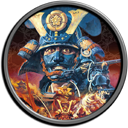

BGM抽出方法
-
群雄伝(DVD版)
群雄伝をインストールしたフォルダの「Nobunaga3anniv\BGM」フォルダにwavファイルが入っています。
wavファイルをiTunesなどで変換しましょう。 -
風雲録(DVD版)
風雲録をインストールしたフォルダの「Nobunaga4anniv\BGM」フォルダにwavファイルが入っています。
wavファイルをiTunesなどで変換しましょう。 覇王伝(DVD版)

覇王伝をインストールしたフォルダの「Nobunaga5anniv\BGM」フォルダにwavファイルが入っています。
wavファイルをiTunesなどで変換しましょう。-
天翔記(CD版)

CD-DAトラックが存在しますので、「音楽CD」として認識します。
普通にiTunesなどで取り込むことが可能です。 -
天翔記(30周年DVD版)
天翔記をインストールしたフォルダの「Nobunaga6anniv\BDAT」フォルダの中に、NobuBgmCnv.exe をコピーして、実行します。
すると.wav ファイルと.mp3ファイルが出来上がります。
後はこの.wavファイルをiTunesなどで変換しましょう。 -
天翔記 HD版

天翔記をインストールしたフォルダの「BDAT」フォルダ、もしくは、「BGM」フォルダの中に、NobuBgmCnv.exe をコピーして、実行します。
すると.wav ファイルと.mp3ファイルが出来上がります。
後はこの.wavファイルをiTunesなどで変換しましょう。
-
将星録(CD版)
CD-DAトラックが存在しますので、「音楽CD」として認識します。
普通にiTunesなどで取り込むことが可能です。
-
将星録(DVD版)
将星録をインストールしたフォルダの「Nobunaga7anniv\BGM」フォルダにwavファイルが入っています。
wavファイルをiTunesなどで変換しましょう。
-
烈風伝(CD版)
CD-DAトラックが存在しますので、「音楽CD」として認識します。
普通にiTunesなどで取り込むことが可能です。
-
烈風伝(DVD版)
烈風伝をインストールしたフォルダの「Nobunaga8anniv\BGM」フォルダにwavファイルが入っています。
wavファイルをiTunesなどで変換しましょう。
-
嵐世記(CD版)
CDに存在する、「NOBU9\BGM」フォルダの中に音楽が入っています。
このBGMフォルダをまるまる、どこかハードディスクにコピーしましょう。
そして、そのハードディスクのBGMフォルダの中に、NobuBgmCnv.exe をコピーして、実行します。
するとwavファイルが出来上がります。
後はiTunesなどで変換しましょう。
-
嵐世記(DVD版)
嵐世記をインストールしたフォルダの「Nobunaga9anniv\BGM」フォルダの中に音楽が入っています。
そして、そのハードディスクのBGMフォルダの中に、NobuBgmCnv.exe をコピーして、実行します。
するとwavファイルが出来上がります。
後はiTunesなどで変換しましょう。
-
蒼天録(全メディア共通)

蒼天録をインストールしたフォルダの「BGM」フォルダの中に音楽が入っています。
そのBGMフォルダの中に、NobuBgmCnv.exe をコピーして、実行します。
するとwavファイルが出来上がります。
後はiTunesなどで変換しましょう。
-
天下創世(全メディア共通)
天下創世をインストールしたフォルダの「BGM」フォルダの中に音楽が入っています。
そのBGMフォルダの中に、NobuBgmCnv.exe をコピーして、実行します。
するとwavファイルが出来上がります。
後はiTunesなどで変換しましょう。
-
革新(全メディア共通)
革新をインストールしたフォルダの「SND」フォルダの中に音楽が入っています。
そのsndフォルダの中に、NobuBgmCnv.exe をコピーして、実行します。
するとwavファイルが出来上がります。
後はwavファイルをiTunesなどで変換しましょう。
-
天道(全メディア共通)
天道をインストールしたフォルダの「SND\BGM」フォルダの中に音楽が入っています。
そのSND\BGMフォルダの中に、NobuBgmCnv.exe をコピーして、実行します。
するとwavファイルが出来上がります。
後はwavファイルをiTunesなどで変換しましょう。
-
創造(全メディア共通)
創造をインストールしたフォルダの「BGM」フォルダや「BGM_PK」フォルダの中に音楽が入っています。
そのBGMフォルダの中に、NobuBgmCnv.exe をコピーして、実行します。
するとwavファイルが出来上がります。
後はwavファイルをiTunesなどで変換しましょう。
-
創造 戦国立志伝(全メディア共通)
創造 戦国立志伝をインストールしたフォルダの「BGM」フォルダや「BGM_PK」フォルダの中に音楽が入っています。
そのBGMフォルダの中に、NobuBgmCnv.exe をコピーして、実行します。
するとwavファイルが出来上がります。
後はwavファイルをiTunesなどで変換しましょう。
-
大志(全メディア共通)
大志をインストールしたフォルダの「BGM」フォルダや「BGM_PK」フォルダの中に音楽が入っています。
そのBGMフォルダの中に、NobuBgmCnv.exe をコピーして、実行します。
するとwavファイルが出来上がります。
後はwavファイルをiTunesなどで変換しましょう。